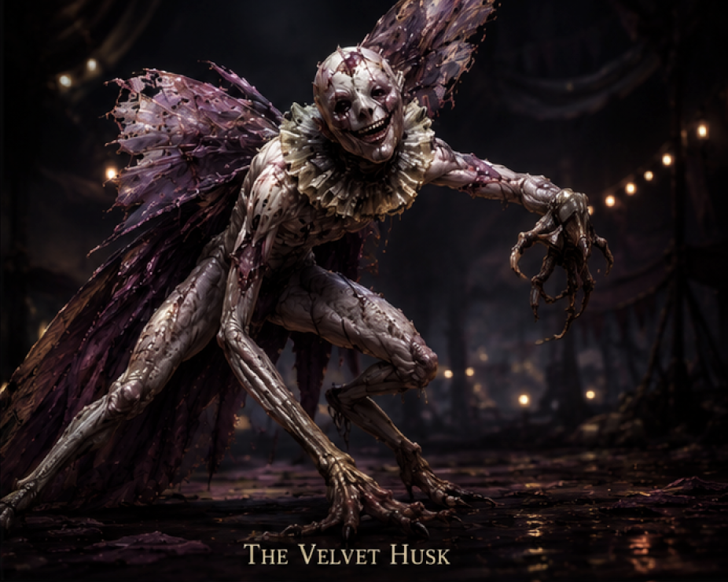
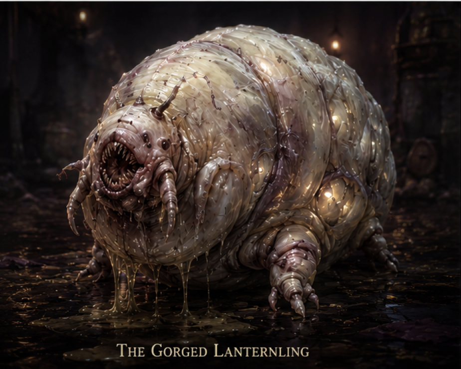
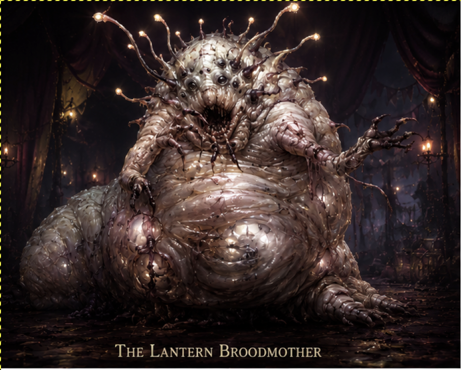
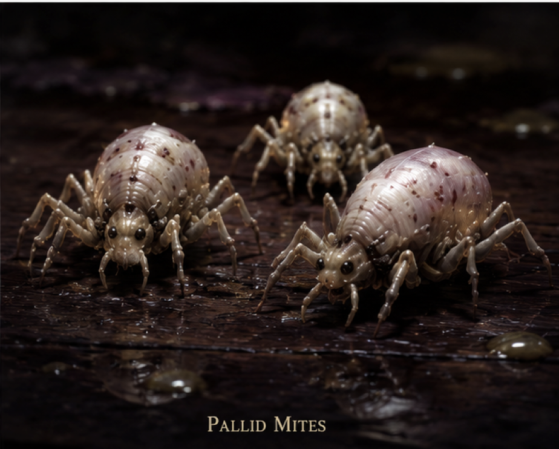

Encounter Overview
Setting & Tone
The outbreak occurs at the height of the Moonlit Mirage Carnival's first full nighttime performance. The battlefield is unstable: collapsing stage rigging, burning lanterns, screaming civilians, stampeding crowds, spreading insects, and pulsing magical light.
"The carnival itself is coming apart."
Encounter Design
- Designed for a Level 1–2 party
- Focus on panic, environmental chaos, crowd management
- Positioning and escalating horror
- Players should be rewarded for creative use of fire and the carnival environment
The Artifact — Key Fact
If the artifact is destroyed at any point during the encounter, all brood creatures die immediately. This applies even mid-emergence. The feeding cycle collapses instantly.
If the artifact was already destroyed before the Nightbloom, the outbreak does not occur.
Environmental Interaction
- Throwing or breaking lanterns
- Igniting curtains or stage rigging
- Spilling oil and driving creatures toward flame
- Collapsing burning rigging onto creatures
- Using the crowd's movement as cover or distraction
Shared Trait — All Brood Creatures: Fire Aversion
All brood creatures instinctively fear flame. Whenever one takes fire damage, it cannot take reactions until the start of its next turn. Additional per-creature effects:
- Broodmother — loses Emotional Feeding until end of its next turn
- Velvet Husk — cannot use Shadow Glide until end of its next turn
- Gorged Lanternling — loses Unstable Body until end of its next turn
✦
At the climax of the Nightbloom, the Velvet Husk erupts from the collapsing performer while the Gorged Lanternling tears free from beneath the floorboards. Some audience members initially mistake them for part of the act. Then blood hits the stage.

The Velvet Husk
Medium Aberration
A performer whose transformation completed incorrectly. Tall and vaguely humanoid, its limbs bend backward unnaturally. Its face is frozen in a stretched carnival smile beneath splitting skin. Torn moth-like wings drag behind it like ruined velvet curtains. Its movements flicker unnervingly in dim light.
AC13
HP20
Speed35 ft.
RoleSkirmisher
STR10 (+0)
DEX16 (+3)
CON12 (+1)
INT6 (−2)
WIS11 (+0)
CHA8 (−1)
Saving Throws DEX +5
Skills Stealth +5, Acrobatics +5
Senses Darkvision 60 ft., passive Perception 10
Languages Understands Common but cannot speak
Abilities & Traits
Flickering Motion. Opportunity attacks against the Husk are made with disadvantage.
Shadow Glide. If standing in dim light, the Husk may teleport 10 feet as a bonus action. If the Husk takes fire damage, it cannot use Shadow Glide until the end of its next turn.
Actions
Claw Swipe. Melee Attack: 1d4+2 slashing damage.
Maddening Smile (Recharge 6). One creature within 15 feet must make a DC 11 Wisdom save. Failure: disadvantage on next Perception or Insight check, and cannot take opportunity attacks until end of next turn.
Combat Notes
- Fast-moving skirmisher and ambusher. Pressures isolated targets and moves unpredictably through the battlefield chaos.
- Prioritizes characters standing in dim light — uses Shadow Glide to flank and disengage.
- Use Maddening Smile on spellcasters or characters with high Perception to blunt their awareness advantage.
- Drives toward whatever is generating the most emotional energy — the crowd, a frightened NPC, or the artifact.

The Gorged Lanternling
Small Aberration
Round, swollen, and dragging itself across the stage. Its translucent flesh glows softly beneath pale skin. It constantly leaks pale fluid and emits childlike chirping noises. When injured, its body writhes and splits. It is deceptively dangerous — slow at first, then frantic.
AC11
HP22
Speed15 ft.
RoleArea Denial
STR12 (+1)
DEX6 (−2)
CON16 (+3)
INT2 (−4)
WIS10 (+0)
CHA5 (−3)
Saving Throws CON +5
Skills None
Senses Darkvision 30 ft., passive Perception 10
Languages None
Abilities & Traits
Unstable Body. When reduced below half HP, its speed doubles and it gains advantage on attack rolls. If the Lanternling takes fire damage, it loses Unstable Body until the end of its next turn.
Actions
Body Slam. Melee Attack: 1d6+1 bludgeoning damage.
Lantern Burst (1/day). Creatures within 10 feet must make a DC 11 Constitution save. Failure: blinded until end of next turn.
Death Burst. When killed, explodes into pale insects. Creatures within 5 feet must make a DC 10 Dexterity save. Failure: 1d4 piercing damage. Note: if the Lanternling is the first Phase One creature killed, this triggers the Phase Transition.
Combat Notes
- Area denial and battlefield disruption. Creates movement pressure and environmental danger.
- Let the party underestimate it while it's slow — Unstable Body below half HP dramatically changes its threat level.
- Use Lantern Burst to blind a cluster of party members before it charges.
- Position near civilians to force the party to split attention between combat and protection.
- Death Burst deals modest damage but the panic it causes among the crowd is an additional effect at the GM's discretion.
Phase Transition
The Birth of the Broodmother
The moment either the Velvet Husk or the Gorged Lanternling is killed — the artifact emits a deafening pulse. Every lantern in the carnival flares white. The slain creature's corpse convulses violently before splitting open.
The Lantern Broodmother tears its way into the world. Three Pallid Mites scatter outward from the rupture and immediately begin skittering through the battlefield.
Wet. Violent. Horrifying. The true source of the pallor has finally emerged.
⁂

The Lantern Broodmother
Medium Aberration — Main Boss
A swollen larval horror born from the artifact's feeding cycle. Distended translucent abdomen, twitching vestigial arms, cloudy eyes, and a crown-like cluster of glowing antennae. Its body pulses with dim lantern-colored light. Shapes move beneath its translucent flesh. It drags itself forward with wet scraping motions.
AC12
HP32
Speed20 ft.
Climb20 ft.
RoleController
STR14
DEX8
CON15
INT4
WIS12
CHA10
Abilities & Traits
Emotional Feeding. Whenever a frightened creature begins its turn within 20 feet of the Broodmother, the Broodmother gains 2 temporary HP. If the Broodmother takes fire damage, it loses Emotional Feeding until the end of its next turn.
Bloated Form. The Broodmother has advantage on saves against being shoved or knocked prone.
Lantern Pulse (Recharge 5–6). Creatures within 15 feet make a DC 11 Wisdom save. Failure: disadvantage on next attack roll and speed reduced by 10 feet until end of next turn. Creatures already frightened instead cannot take reactions until end of next turn.
Actions
Multiattack. The Broodmother makes one Bite or two Tendril Lash attacks.
Bite. Melee Attack: 1d6+1 piercing damage. If target is frightened, target must succeed on a DC 11 Wisdom save or move 5 feet away from the Broodmother using their reaction.
Tendril Lash. Melee Attack, 10 ft range: 1d4+1 bludgeoning damage. Target must succeed on a DC 10 Strength save or be pulled 5 feet closer.
Spawn Pallid Mites (1/day). The Broodmother spawns 2 Pallid Mites in adjacent spaces.
Combat Notes
- Battlefield controller and emotional parasite. Creates pressure through fear, positioning, and spawning lesser threats.
- Emotional Feeding means keeping the crowd panicked actively heals the Broodmother — the party faces a choice between managing civilians and focusing fire.
- Use Tendril Lash to drag isolated characters into Bite range. Prioritize anyone already frightened.
- Save Spawn Pallid Mites for when the party is already overwhelmed — the extra bodies and Wisdom save debuff from the mites compound quickly.
- Lantern Pulse is most devastating when the Broodmother has already caused fear — frightened targets losing reactions cannot disengage safely.
- The Broodmother is slow. Ranged parties can kite it — compensate by using Tendril Lash to close the gap and forcing the party to choose between the mites and the boss.

Pallid Mites
Tiny Aberration — Supporting Minions
Tiny pale insect horrors spawned from the brood. Glistening, segmented, and fast. They appear at Phase Transition — three scatter from the Broodmother's birth rupture — and more can be spawned by the Broodmother's ability. Used primarily as environmental pressure and battlefield distraction.
AC12
HP4
Speed20 ft.
Climb20 ft.
RoleSwarm Pressure
STR4 (−3)
DEX14 (+2)
CON10 (+0)
INT1 (−5)
WIS8 (−1)
CHA1 (−5)
Skills Stealth +4
Senses Darkvision 30 ft., passive Perception 9
Languages None
Actions
Bite. Melee Attack: 1 piercing damage. If two or more mites hit the same target in one round, that target has disadvantage on their next Wisdom save.
Combat Notes
- Individually trivial. In groups, they compound the Broodmother's Wisdom-save pressure dramatically.
- Three appear at Phase Transition; more can be spawned by the Broodmother. Track total mite count carefully.
- Direct mites toward the most fear-resistant party member — stacking disadvantage on Wisdom saves opens them to Lantern Pulse and Broodmother Bite effects.
- Mites are killed instantly by area fire damage. Remind players that burning debris, lantern oil, and torch sweeps can clear them efficiently.
- Mites near civilians cause crowd panic. Use them to herd the crowd and force the party to split attention.
✦
Environmental Interaction — Carnival Battlefield
Fire Sources
- Stage torches and performer's flame props
- Hanging lanterns (throw to splash burning oil)
- Nightbloom performer's coordinated fire (if still active)
- Backstage oil barrels and candle banks
Structural Hazards
- Collapsing stage rigging (Athletics to cut or topple)
- Canvas tent walls (can be ignited or torn for escape)
- Unstable platform edges (Dexterity saves if shoved)
- Crowd stampede zones (difficult terrain, risk of being knocked prone)
The Artifact
The artifact can be targeted directly at any point. Destroying it ends the encounter immediately — all creatures die. If the party realizes this during Phase One, they face a race against time while managing the active combat.
AC 12, HP 15. Magical backlash on destruction: DC 12 Dexterity save, 2d6 force damage in 10 ft radius.
Civilian Objectives
- Audience members flee toward exits — stampede risk
- 3–4 unconscious workers near the stage need rescue
- Chaelynn is near the wings — she will try to reach the artifact
- Magnus is with the party's last known position — useful for coordination
GM Summary — Running the Encounter
- Phase One feels like a monster fight. Phase Two reveals it was never just a monster fight.
- Emotional Feeding means the crowd's panic directly sustains the Broodmother — civilian protection has mechanical weight.
- Fire is the great equalizer. Reward players who use the carnival environment creatively.
- The artifact is always the nuclear option. If the party realizes it mid-fight, let them race for it.
- The Pallid Mites are not a threat alone — they are a Wisdom-save delivery system for the Broodmother. Run them aggressively.
- The encounter should end either with the artifact destroyed, the Broodmother dead, or both — not both sides exhausted and standing.